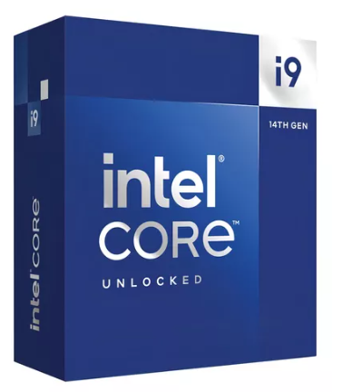
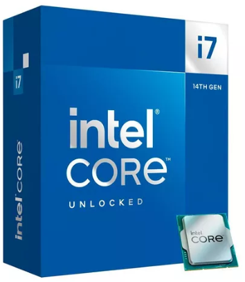
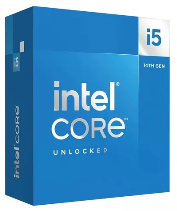
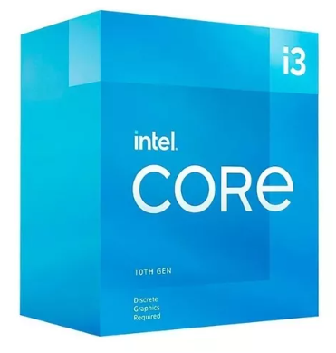

PROCESADORS GAMA ALTA POR PARTE DE INTEL
Procesador gamer Intel Core i9-14900K BX8071514900K de 24 núcleos y 6GHz de frecuencia con gráfica integrada

Productividad y entretenimiento, todo disponible en tu computadora de escritorio. La superioridad tecnológica de INTEL es un beneficio para todo tipo de profesionales. Asegura el mejor rendimiento de las aplicaciones, de la transferencia de datos y la conexión con otros elementos tecnológicos.
Núcleos: el corazón del procesador
En este producto, encontrarás los núcleos, que son los encargados de ejecutar las instrucciones y actividades que le asignás a tu dispositivo. Estos tienen relación directa con dos elementos: los hilos y el modelo. Por lo tanto, a la hora de elegir un procesador, es importante que valores los tres en su conjunto.
Máxima potencia
Al estar desbloqueado, podrás realizar overclocking y así aumentar la frecuencia de funcionamiento y optimizar el rendimiento de tu equipo. Personalizalo a tu gusto y disfrutá de tus videojuegos o hacé que la renderización de imágenes sea más ágil. ¡Descubrí el abanico de posibilidades que esta función te ofrece!
Procesador gamer Intel Core i7-14700K BX8071514700K de 20 núcleos y 5.6GHz de frecuencia con gráfica integrada

La ROG Strix GeForce RTX™ 4080 aporta un nuevo significado a seguir la corriente. Por dentro y por fuera, cada elemento de la tarjeta da a la monstruosa GPU espacio para respirar libremente y conseguir rendimiento térmico El reino desatado de la arquitectura NVIDIA Ada Lovelace ya está aquí. Potenciado por GeForce RTX Serie 40 y DLSS 3 Nuevos multiprocesadores de streaming Hasta el doble de rendimiento y eficiencia energética Núcleos sensores de cuarta generación Hasta 4 veces más rendimiento con DLSS 3 frente a la renderización por fuerza bruta Núcleos sensores de cuarta generación Rendimiento de trazado de rayos de hasta el doble
PROCESADORES GAMA ALTA POR PARTE DE AMD
MICRO AMD RYZEN 9 7950X C/VIDEO S/COOLER AM5

Plataforma Computadora de escritorio
Familia de productos AMD Ryzen™ Processors
Línea de productos AMD Ryzen™ 9 Desktop Processors
N.° de núcleos de CPU 16
N.° de subprocesos 32
Reloj de aumento máx. Hasta 5.7GHz
Reloj base 4.5GHz
Caché L1 total 1MB
Caché L2 total 16MB
Caché L3 total 64MB
TDP/TDP predeterminado 170W
Processor Technology for CPU Cores TSMC 5nm FinFET
Desbloqueados Sí
Paquete AM5
Temp. máx. 95°C
Procesador Amd Ryzen 7 8700g 4.2ghz Radeon 8 Cores Am5

Clave en el rendimiento de tu computadora de escritorio, ya no tenés que pensar en cómo distribuir el tiempo y acciones porque ahora las tareas en simultáneo son posibles. AMD cuenta con un catálogo de productos que se adaptan a los requerimientos de todo tipo de usuarios: juegos en línea, edición a gran escala, contenido en múltiples plataformas y más.
PROCESADORES GAMA MEDIA POR PARTE DE INTEL
Procesador Intel Core I5 14600k 3.5 Ghz Socket 1700

Productividad y entretenimiento, todo disponible en tu computadora de escritorio. La superioridad tecnológica de INTEL es un beneficio para todo tipo de profesionales. Asegura el mejor rendimiento de las aplicaciones, de la transferencia de datos y la conexión con otros elementos tecnológicos. Máxima potencia Al estar desbloqueado, podrás realizar overclocking y así aumentar la frecuencia de funcionamiento y optimizar el rendimiento de tu equipo. Personalizalo a tu gusto y disfrutá de tus videojuegos o hacé que la renderización de imágenes sea más ágil. ¡Descubrí el abanico de posibilidades que esta función te ofrece!
PROCESADORES GAMA MEDIA POR PARTE DE AMD
Microprocesador Pc Amd Ryzen 5 4600g 8mb 3.7ghz Socket Am4 100-100000147box 6 Nucleos 12 Hilos

Clave en el rendimiento de tu computadora de escritorio, ya no tenés que pensar en cómo distribuir el tiempo y acciones porque ahora las tareas en simultáneo son posibles.
AMD cuenta con un catálogo de productos que se adaptan a los requerimientos de todo tipo de usuarios: juegos en línea, edición a gran escala, contenido en múltiples plataformas y más.
Núcleos: el corazón del procesador
En este producto, encontrarás los núcleos, que son los encargados de ejecutar las instrucciones y actividades que le asignás a tu dispositivo. Estos tienen relación directa con dos elementos: los hilos y el modelo. Por lo tanto, a la hora de elegir un procesador, es importante que valores los tres en su conjunto.
Máxima potencia
Al estar desbloqueado, podrás realizar overclocking y así aumentar la frecuencia de funcionamiento y optimizar el rendimiento de tu equipo. Personalizalo a tu gusto y disfrutá de tus videojuegos o hacé que la renderización de imágenes sea más ágil. ¡Descubrí el abanico de posibilidades que esta función te ofrece!
PROCESADORES GAMA BAJA POR PARTE DE INTEL
Procesador gamer Intel Core i3-10105 BX8070110105 de 4 núcleos y 4.4GHz de frecuencia con gráfica integrada

Productividad y entretenimiento, todo disponible en tu computadora de escritorio. La superioridad tecnológica de INTEL es un beneficio para todo tipo de profesionales. Asegura el mejor rendimiento de las aplicaciones, de la transferencia de datos y la conexión con otros elementos tecnológicos.
Núcleos: el corazón del procesador
En este producto, encontrarás los núcleos, que son los encargados de ejecutar las instrucciones y actividades que le asignás a tu dispositivo. Estos tienen relación directa con dos elementos: los hilos y el modelo. Por lo tanto, a la hora de elegir un procesador, es importante que valores los tres en su conjunto.
Máxima potencia
Al estar desbloqueado, podrás realizar overclocking y así aumentar la frecuencia de funcionamiento y optimizar el rendimiento de tu equipo. Personalizalo a tu gusto y disfrutá de tus videojuegos o hacé que la renderización de imágenes sea más ágil. ¡Descubrí el abanico de posibilidades que esta función te ofrece!
Microprocesador Pc Intel Celeron G6900 4mb 3.4ghz Bx80715g6900 Socket Fc lga 1700 12va Generación De 2 Núcleos Ddr4

Las PCs Intel de nivel básico pueden ayudar a los usuarios a colaborar, crear, aprender y jugar como nunca antes.
Los usuarios pueden disfrutar de las excelentes experiencias que querían con sus computadoras portátiles, chromebooks, convertibles o equipos de desktop, con las opciones de seguridad y conectividad para un estilo de vida moderno protegido.
Los procesadores Intel Celeron están diseñados para brindar desempeño y valor confiables en las PCs y los dispositivos portátiles asequibles de nivel básico.
Procesador Intel Celeron G5905 BX80701G5905 de 2 núcleos y 3.5GHz de frecuencia con gráfica integrada

Productividad y entretenimiento, todo disponible en tu computadora de escritorio. La superioridad tecnológica de INTEL es un beneficio para todo tipo de profesionales. Asegura el mejor rendimiento de las aplicaciones, de la transferencia de datos y la conexión con otros elementos tecnológicos.
Núcleos: el corazón del procesador
En este producto, encontrarás los núcleos, que son los encargados de ejecutar las instrucciones y actividades que le asignás a tu dispositivo. Estos tienen relación directa con dos elementos: los hilos y el modelo. Por lo tanto, a la hora de elegir un procesador, es importante que valores los tres en su conjunto.
Máxima potencia
Al estar desbloqueado, podrás realizar overclocking y así aumentar la frecuencia de funcionamiento y optimizar el rendimiento de tu equipo. Personalizalo a tu gusto y disfrutá de tus videojuegos o hacé que la renderización de imágenes sea más ágil. ¡Descubrí el abanico de posibilidades que esta función te ofrece!
PROCESADORES GAMA BAJA POR PARTE DE AMD
Procesador gamer AMD Ryzen 3 3200G YD3200C5FHBOX de 4 núcleos y 4GHz de frecuencia con gráfica integrada

Mejora tu experiencia de juego con el Procesador gamer AMD Ryzen 3 3200G, diseñado para brindarte un rendimiento óptimo en tus partidas. Con sus 4 núcleos y una frecuencia máxima de 4 GHz, disfrutarás de una velocidad y fluidez excepcionales en tus juegos favoritos. Además, su arquitectura x86-64 te garantiza una compatibilidad amplia con diversos sistemas y aplicaciones.
Este procesador es compatible con memorias RAM DDR4 y soporta hasta 64 GB, lo que te permitirá expandir tu capacidad de almacenamiento y mejorar el rendimiento de tu equipo. Gracias a su zócalo AM4, podrás instalarlo fácilmente en una amplia variedad de placas base.
La Radeon Vega 8 Graphics integrada te brinda una calidad gráfica sorprendente, permitiéndote disfrutar de tus juegos con una resolución y detalle impresionantes. Además, al ser un procesador desbloqueado, tendrás la libertad de realizar overclocking y personalizar su rendimiento según tus necesidades.
Con una potencia de diseño térmico de 65 W, este procesador AMD Ryzen 3 3200G garantiza un funcionamiento eficiente y una menor generación de calor, lo que se traduce en un menor consumo de energía y una vida útil más prolongada para tu equipo.
No esperes más para llevar tu experiencia de juego al siguiente nivel con este potente procesador AMD Ryzen 3 3200G.
Procesador AMD Athlon 3000G YD3000C6FH de 2 núcleos y 3.5GHz de frecuencia con gráfica integrada

Clave en el rendimiento de tu computadora de escritorio, ya no tenés que pensar en cómo distribuir el tiempo y acciones porque ahora las tareas en simultáneo son posibles.
AMD cuenta con un catálogo de productos que se adaptan a los requerimientos de todo tipo de usuarios: juegos en línea, edición a gran escala, contenido en múltiples plataformas y más.
Núcleos: el corazón del procesador
En este producto, encontrarás los núcleos, que son los encargados de ejecutar las instrucciones y actividades que le asignás a tu dispositivo. Estos tienen relación directa con dos elementos: los hilos y el modelo. Por lo tanto, a la hora de elegir un procesador, es importante que valores los tres en su conjunto.
Máxima potencia
Al estar desbloqueado, podrás realizar overclocking y así aumentar la frecuencia de funcionamiento y optimizar el rendimiento de tu equipo. Personalizalo a tu gusto y disfrutá de tus videojuegos o hacé que la renderización de imágenes sea más ágil. ¡Descubrí el abanico de posibilidades que esta función te ofrece!
Micro Amd Am3 Athlon Ii 2.7gh Funcionando Con Gtia Envios